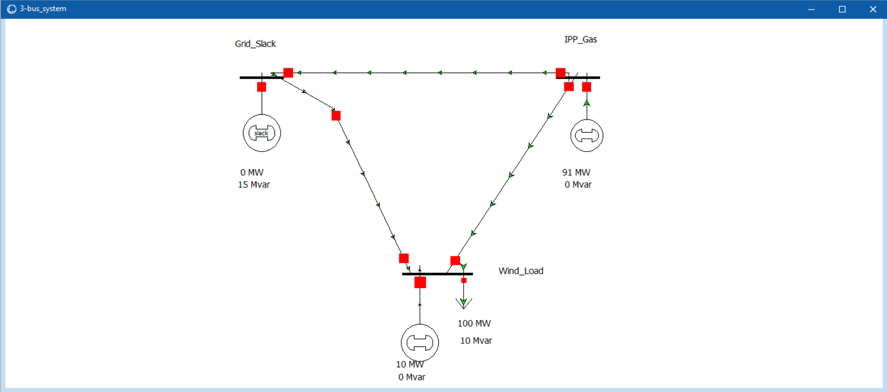

Technical Projects
Strategic Bidding in a Congested Power System: A Bayesian Game Approach
Tools: Power System Analysis, Optimal Power Flow (OPF), Probabilistic Modeling, Game Theory, Python
This project models the strategic bidding behavior in a wholesale electricity market where a conventional Independent Power Producer (IPP) and a Renewable Energy (Wind) generator compete. The core challenge addressed is asymmetric information: the Wind generator has private knowledge of its exact available generation capacity, whereas the IPP must bid blindly, relying solely on prior probabilistic beliefs about the wind states.
1. Model Parameters & Optimal Power Flow (OPF) Data
The fundamental parameters of the game establish the cost structure and the probabilities of the hidden states of nature.
Marginal Costs: IPP = $30.0/MWh, Wind = $0.0/MWh.
Probabilities of Nature's States: High Wind (Max Capacity: 60 MW) = 0.6, Low Wind (Max Capacity: 10 MW) = 0.4.
The payoffs are derived from a simulated physical Optimal Power Flow (OPF). Below is the raw structural OPF dataset representing [LMP IPP, Dispatch IPP, LMP Wind, Dispatch Wind] under all possible action profiles and states:

| Wind State | IPP Action | Wind Action | LMP IPP ($/MWh) | Disp IPP (MW) | LMP Wind ($/MWh) | Disp Wind (MW) |
|---|---|---|---|---|---|---|
| High Wind (60 MW) | Conservative (40 MW) | Withhold (0 MW) | 80.0 | 40.0 | 80.0 | 0.0 |
| Max (60 MW) | 80.0 | 40.0 | 80.0 | 60.0 | ||
| Aggressive (100 MW) | Withhold (0 MW) | 80.0 | 100.0 | 80.0 | 0.0 | |
| Max (60 MW) | 41.0 | 40.0 | 41.0 | 60.0 | ||
| Low Wind (10 MW) | Conservative (40 MW) | Withhold (0 MW) | 80.0 | 40.0 | 80.0 | 0.0 |
| Max (10 MW) | 80.0 | 40.0 | 80.0 | 10.0 | ||
| Aggressive (100 MW) | Withhold (0 MW) | 80.0 | 100.0 | 80.0 | 0.0 | |
| Max (10 MW) | 91.0 | 91.0 | 41.8 | 10.0 |
2. Perfect Information Payoffs
The utility function for each player is defined as their net operational profit:
Ui(aIPP, aWind, θ) = (LMPi × Dispatchi) - (Marginal Costi × Dispatchi)
Applying this formula to the OPF data yields the exact Ex-Post payoffs (UIPP, UWind) assuming perfect information of the wind state:
State: High Wind
| IPP \ Wind | Withhold | Max |
|---|---|---|
| Conservative | (2000, 0) | (2000, 4800) |
| Aggressive | (5000, 0) | (440, 2460) |
State: Low Wind
| IPP \ Wind | Withhold | Max |
|---|---|---|
| Conservative | (2000, 0) | (2000, 800) |
| Aggressive | (5000, 0) | (5551, 418) |
3. Expected Utility (Bayesian Normal Form)
Because the IPP acts without knowing the true wind state, we evaluate its decisions against the four composite strategies available to the Wind player (e.g., "WM" denotes Withholding in High wind, but bidding Max in Low wind). The Ex-Ante Expected Utility (EU) represents a probability-weighted average:
E[U] = 0.6 × UHigh + 0.4 × ULow
| IPP \ Wind Strategy | WW (Withhold, Withhold) |
WM (Withhold, Max) |
MW (Max, Withhold) |
MM (Max, Max) |
|---|---|---|---|---|
| Conservative | (2000, 0) | (2000, 320) | (2000, 2880) | (2000, 3200) |
| Aggressive | (5000, 0) | (5220.4, 167.2) | (2264, 1476) | (2484.4, 1643.2) |
4. Proposition & Equilibrium Analysis
Proposition:
The strategy profile s* = (Aggressive, (Max, Max)) constitutes the unique pure-strategy Bayesian Nash Equilibrium (BNE) of the modeled electricity market game.
Proof:
- Identify strictly dominant strategies for the Wind generator:
The Wind generator operates at zero marginal cost ($0/MWh). Consequently, its profit strictly correlates with the total dispatched volume, assuming a non-negative Locational Marginal Pricing (LMP). Analyzing the Ex-Post payoffs, bidding "Max" yields a strictly higher payoff than "Withhold" against any IPP bid in both High and Low wind conditions. Therefore, the strategy mapping to play Max under all conditions, denoted as MM (Max, Max), is strictly dominant. - Identify the IPP's Best Response (BR):
Recognizing that a rational Wind player will execute its strictly dominant strategy (MM), the IPP evaluates its expected payoffs conditionally against MM using the Bayesian Normal Form matrix:- EUIPP(Conservative | MM) = 2000.0
- EUIPP(Aggressive | MM) = 2484.4
- Conclusion:
Given the profile (Aggressive, MM), neither player possesses a financial incentive to unilaterally deviate. Furthermore, because MM is derived via strict dominance, this Bayesian Nash Equilibrium point is mathematically unique. ∎
Humanization in Task-oriented Conversational Agents
Tools: Python, NLP, LLM, Algorithms
A short-term, extended task-oriented conversation system designed to gather user feedback about a lecture in a user-centered manner. The system leverages hierarchical state transitions to guide the conversation effectively.
How this system is different and serves your purpose?
A key advantage of this system is its adaptability to specific requirements. The pre-defined scripts utilized in the original implementation can be entirely replaced with your own custom scripts.
Key features include:
- State Management: The architecture currently supports a maximum of four "superstates."
- Survey Structuring: It is recommended to partition your survey questions into up to four main thematic blocks.
- Scalability: Each block can handle an unlimited number of individual questions.

Digital Twin of an Intelligent Production line with Adaptive Resource Handling
Tools: Discrete Event Simulation, Fuzzy inference system, Siemens Tecnomatix Plant Simulation
During low-demand periods of the transformer manufacturing process, large-scale factories face severe problems due to a lack of utilization of the available resources, thereby leading to unexpected machine failures. There is a need to understand the production line behavior and allocate the resources that suit particular demand, maximizing the use of all available resources so that machine downtime will be eventually reduced.
Estimating Machine Failure Probability Maximum Likelihood Estimation(MLE):From annual maintenance data, we recorded times-to-failure (ti) for each machine and assumed an Exponential distribution for failures. The rate parameter (λ) was estimated using Maximum Likelihood Estimation (MLE) of all observations.
- Defined Probability Density Function (PDF) for a single machine failing at time ti:
f(ti | λ) = λe-λti - Calculated the Joint Likelihood L(λ) of n independent failures:
L(λ) = Πi=1n λe-λti = λne-λΣti - Maximize the Log-Likelihood ln(L(λ)) to find the optimal λ:
ln(L(λ)) = n·ln(λ) - λΣi=1n ti - Maximize by differentiation and set to zero:
d/dλ [ln(L(λ))] = n/λ - Σti = 0 - Solving for the MLE of the failure rate (λMLE):
λMLE = n / Σi=1n ti
Computing Failure rate of a High Voltage (HV) Winding Machine:
Based on actual maintenance data, we observed n = 5 failures occurring at t = {12, 15, 22, 38, 42} hours. Given a total operating time of Σti = 129 hours, the estimated failure rate is λ = 5 / 129 ≈ 0.04 failures/hour.
We modeled the digital twin of the electric transformer production line using actual data such as operation time per part and machine failure rates. Bottlenecks and inefficiencies were identified through multiple simulations. An algorithm using multiple fuzzy logic controllers were implemented to monitor performance and optimize machine combinations.
To do so, we proposed a fuzzy logic-based machine switching strategy for workers to increase the throughput of the production line by 12.5% in a 20 days of simulation run.

Video Demonstration: